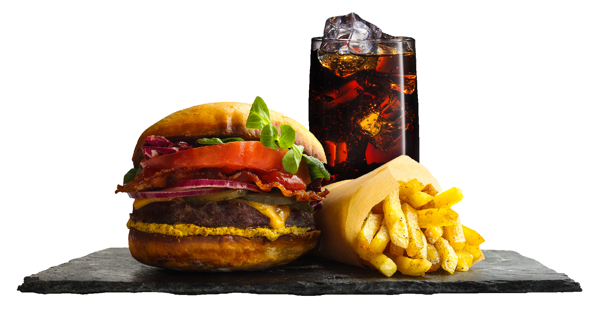
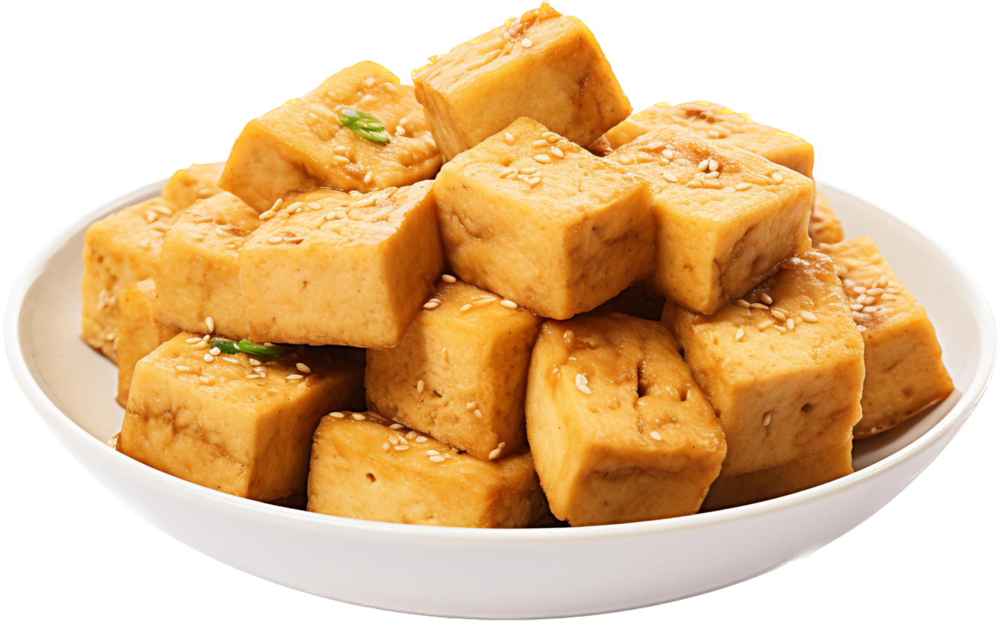
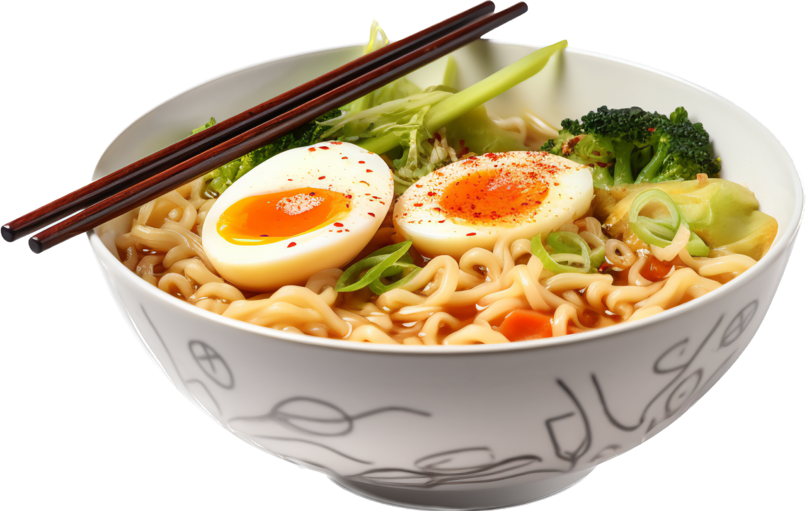

Good food is like music you can taste, art you can eat and happiness you can swallow !

American
Comforting and familiar
" American food is all about hearty classics like juicy burgers, cheesy pizzas, and gooey mac and cheese. You can also find lighter options like fresh salads and grilled chicken"
This content will appear below the floated elements "

Chinese
Diverse and flavorful
" Chinese cuisine varies greatly depending on the region, but you can generally expect stir-fries, dumplings, noodles, and rice dishes. Popular choices include Kung Pao chicken, sweet and sour pork, and wonton soup "
This content will appear below the floated elements.
Indian fusion
Spicy and flavorful
" Indian food is known for its bold use of spices like turmeric, chili powder, and garam masala, creating dishes that are both warming and exciting. Think fragrant curries like chicken tikka masala and lamb rogan josh, fluffy basmati rice, and crispy samosas.The King's Banquet "
This content will appear below the floated elements.
Italian
Simple and elegant
" Italian food is based on fresh, seasonal ingredients and time-honored cooking techniques. Think pasta dishes like spaghetti and meatballs, wood-fired pizzas with melty mozzarella, and delicate risottos"
This content will appear below the floated elements

Japanese
Delicate and healthy:
" Japanese food is known for its focus on fresh seafood, vegetables, and rice. Sushi, sashimi, and tempura are all popular choices, as well as noodle dishes like ramen and udon "
This content will appear below the floated elements.